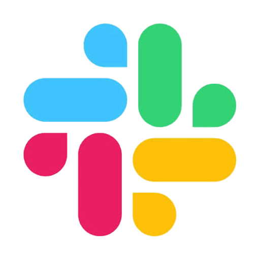
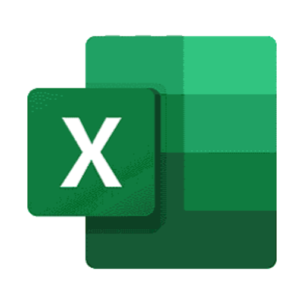

포트폴리오
2026
계약과 일정을 관리하고운영까지 책임지는박세훈입니다.
게임 사업 PM
- 이노디스 기획 PL로 기관 사업 4건을 동시에 맡았습니다.
- 계약 문서를 직접 쓰고, 일정표로 작업자와 협력사 일정을 맞췄습니다.
- 경력 4년 8개월 · 사업 규모 5,000만 원 ~ 1억 원
01 / 27
프로필
2026
인적사항
- 박세훈 / 게임 사업 PM · 라이브 옵스
- 생년월일 1993. 6. 1.
- 010-7222-0473
- sun8070vvv20@gmail.com
학력 · 병역
- 2012. 3. – 2020. 2. 울산대학교 졸업
- 2013. 4. – 2015. 1. 육군 만기전역
경력 · 4년 8개월
- 2025. 2. – 2026. 10. 31. 이노디스 / 웹서비스팀 기획 PL
- 2024. 1. – 11. 그라비티 네오싸이언 / 운영 기획 · 대리
- 2021. 7. – 2023. 6. 이노컴즈 / 서비스 기획 · 주임
도구
 PowerPoint · Slides숙련도 상
PowerPoint · Slides숙련도 상 한글 · Word숙련도 상
한글 · Word숙련도 상
Slack숙련도 상
Excel · Sheets숙련도 중 Figma숙련도 중
Figma숙련도 중- VS Code숙련도 중
 생성형 AI숙련도 중
생성형 AI숙련도 중
02 / 27
목차
2026
목차
03 / 27
소개
2026
소개
계약 · 일정 · 외부 협력사 관리를 게임 사업 운영으로 잇는 PM
04 / 27
소개
2026
웹과 앱, 그 너머까지
다양한 경험을 하고 싶은
PM입니다
경력회사 3곳에서 4년 8개월
이노컴즈서비스 기획 · 주임
2021. 7. – 2023. 6.(2년)
수시로 들어오던 요구사항을 기간을 정해 한 번에 받게 했습니다
그라비티 네오싸이언운영 기획 · 대리
2024. 1. – 11.(11개월)
이벤트 오픈일에 맞춰 관리자 화면 작업 일정을 잡았습니다
이노디스웹서비스팀 기획 PL
2025. 2. – 2026. 10. 31.(1년 9개월)
기관 사업 PL로 일정과 계약, 유지보수 운영을 맡았습니다
경험한 분야
문화·예술 포털
서울영화센터
청년 정책 · 재무상담
서울영테크
박물관 누리집
국립부여박물관
면세 이커머스
신세계DF
출입증 · 전자결재 업무 시스템
이노컴즈
기관 홈페이지
이노컴즈
역량 5가지
계약 · 정산
맡은 사업의 착수계 · 업무보고 · 대금청구 · 완료계를 직접 작성하고 정산까지 진행
일정 · 협력사 조율
일정표로 작업 착수 시점을 나누고, 키오스크사 · 예매사와 연결 일정을 조율
운영 · 고도화
구축 뒤 유지보수 계약으로 운영을 이어 가고, 운영 데이터로 고도화를 제안해 계약
이벤트 운영 규칙
이벤트 참여 조건 · 회차 제한 · 지급 예외를 표준 양식으로 정리하고 오픈일에 맞춰 일정을 조정
AI 활용
하네스 · skill을 적용하고 Git · Vercel로 배포하며, 로컬 파일을 연결한 대시보드를 구성해 정리
소개 · 05 / 27
사업 관리
2026
사업 관리
기관 사업 4건을 동시에 맡아 대금청구 누락 0건으로 운영했습니다
06 / 27
사업 관리
2026
기관 사업 4건을 동시에 맡아
대금청구 누락 0건으로 운영했습니다
관리 대상은 계약, 일정, 요청으로 나눴습니다. 사업마다 같은 방식으로 기록했고, 결과는 지표와 후속 조치로 정리했습니다. 업데이트·이벤트 일정과 외부 계약이 맞물리는 게임 사업 운영에도 같은 틀을 쓸 수 있습니다.
성공과 모니터링을 나눈 지표 3개
결과가 나온 지표와 계속 지켜볼 지표를 나눴습니다. 지켜볼 지표는 다음 주간 회의의 첫 안건으로 올렸습니다.
| 지표 | 구분 | 결과 | 해석 | 후속 조치 |
|---|---|---|---|---|
| 대금청구 누락 | 성공 | 0건 | 사업별 청구 일정표를 월말에 점검 | 착수 시점에 청구 일정표 작성 |
| 정산 처리 기간 | 성공 | 10일 → 4일 | 완료계 서류를 미리 준비 | 완료계 서류 목록을 착수계와 함께 확정 |
| 요청사항 처리율 | 모니터링 | 95% (114 / 120건) | 미처리 6건은 다음 달로 이월 | 이월 건을 주간 회의 첫 안건으로 |
사업 관리 · 07 / 27
사업 관리 01 · 계약 관리
착수계에서 완료계 · 정산까지
계약 문서는 직접 써서 내부 기안으로 올리고 고객사에 제출했습니다. 사업이 시작되면 착수계를, 끝나면 완료계를 내고 정산했습니다. 업무보고와 대금청구 주기는 사업마다 달랐습니다. 국립부여박물관과 자전거행복나눔은 월별, 서울영화센터는 분기별입니다.
4건
동시 운영 사업연 계약 합계 약 3억 원
0건
대금청구 누락사업별 청구 일정표로 월말 점검
10일→4일
정산 처리 기간완료계 서류를 착수 시점에 미리 준비
착수 · 계약 문서
착수계 제출, 과업 범위 확정, 완료계 서류 목록 미리 작성
월별 · 분기별 업무보고
사업별 보고 주기에 맞춰 수행 내역 정리
대금청구 기안
내부 결재 뒤 고객사에 세금계산서 요청
수정기안 · 재상신
범위나 금액이 바뀌면 수정기안으로 다시 결재
완료계 · 정산
검수 확인 뒤 완료계 제출, 정산 마감
사업별 월 업무보고와 대금청구 기안을 내부 결재로 올렸습니다. 문서 제목과 기안자는 흐리게 가림
사업 관리 · 08 / 27
사업 관리 02 · 일정 · 요청 관리
여러 사업을 동시에, 일정표와 주간 회의로
에이전시에서는 한 사람이 여러 사업을 동시에 맡습니다. 기획 산출물이 나오는 순서에 맞춰 디자이너와 개발자의 착수 시점을 일정표로 정했습니다. 요청사항 처리 현황은 주간 회의에서 확인했습니다.
40회
주간 회의 운영회의록 공유 · 일정표 갱신
114 / 120건
요청사항 처리 · 95%미처리 6건은 다음 달로 이월
100%
이벤트 일정 준수 · 12건오픈일 기준으로 역산한 일정
주간 계획 수립
사업별 마감일을 기준으로 주간 작업 확정
직군별 배분
산출물 순서에 맞춘 디자인·개발 착수 시점
진행 점검
담당자별 현황판 확인, 겹치는 일정 조율
검수 · 공유
검수 결과와 회의록을 고객사와 작업자에 공유
주간 업무 현황판 발췌. 담당자별 프로젝트와 날짜별 작업 배분
사업 관리 · 09 / 27
사업 관리 02 · 월간 관리 사이클
한 달을 4주로 나눈 직군별 관리 사이클입니다.
| 주차 | PL(본인) | 디자인 · 퍼블리싱 | 개발 | 산출물 |
|---|---|---|---|---|
| 1주 · 접수 | 요청사항 접수 · 우선순위 · 담당 배분 | 전월 이월 시안 마감 | 전월 이월 과업 처리 | 요청사항 목록 |
| 2주 · 착수 | 주간 회의 · 일정표 갱신 · 화면 정의 | 컨셉 시안 먼저 제출 | 착수 · 구현 | 회의록 · 일정표 |
| 3주 · 점검 | 진척 점검 · 겹치는 일정 조율 | 시안 수정 · 퍼블리싱 | 구현 · 테스트 | 진행 현황표 |
| 4주 · 마감 | 검수 · 월 업무보고 · 대금청구 기안 | 검수 반영 | 검수 반영 · 개발 반영 | 업무보고 · 청구 기안 |
직군마다 다르게 잡은 착수 시점
디자인 · 퍼블리싱
필요할 때는 기획서보다 컨셉 시안을 먼저 요청했습니다
고객사가 가장 빨리 이해하는 산출물이 시안입니다. 시안을 놓고 고객사와 협의하면서 기획을 같이 진행했습니다.
개발
착수는 앞당기고 마감에는 여유를 두었습니다
고객사가 결과를 바로 체감하기는 어렵지만, 꼼꼼하게 만들고 테스트를 자주 해야 하는 작업입니다. 그래서 착수를 최대한 앞당겼습니다.
사업 관리 · 10 / 27
프로젝트
2026
프로젝트
이노디스 8건 · 이노컴즈 8건과 2024~2026년에 맡은 대표 프로젝트 4건
11 / 27
프로젝트
이노디스 2025. 2. – 2026. 10. · 8건
| 프로젝트 | 유형 | 작업 내용 | 시기 |
|---|---|---|---|
| 서울영화센터대표 | 구축유지보수 | 회원 · 대관 · 교육 신청 시스템 구축 · 쿠폰 관리 화면 · 관람 통계 3종 | 2025. 3. – 2026. 10. 31. |
| 서울영테크대표 | 재구축 | 상담 신청 · 배정 시스템 재구축 · 유형 분류 · 그룹 강의 | 2025. 4. – 2026. 10. 31. |
| 국립부여박물관대표 | 유지보수 | 키오스크 발권현황 API 연결 · 실시간 관람 현황 | 2025. 5. – 2026. 10. 31. |
| 화성시문화관광재단 | 구축 | 공연장 5개소 통합 홈페이지 · 대관 신청 · 관리 | 2025. – 2026. 10. 31. |
| NABO 국회예산정책처 홈페이지 | 재구축 | 국 · 영문 화면설계서 4종 · 검토의견 관리 | 2025. 5. – 11. |
| 자전거행복나눔 | 유지보수 | 기능 개선 · 개인정보 실태점검 대응 · 시연 화면 | 2026. |
| 서울아트마켓 · 서울국제공연예술제 | 구축유지보수 | 통합 웹사이트 산출물 · 정보보안 점검 문서 | 2025 – 2026 |
| 임대차분쟁조정위원회 | 유지보수 | 월간 운영 · 보안 점검 · 요청사항 관리 | 2025. |
프로젝트 · 12 / 27
프로젝트
이노컴즈 2021. 7. – 2023. 6. · 8건
| 프로젝트 | 유형 | 작업 내용 | 시기 |
|---|---|---|---|
| 울주도서관 누리집 | 유지보수 | 월별 점검 · 통합로그인 · 기능 개선 완료보고 | 2022 – 2023 |
| 석유공사 | 유지보수 | 월별 용역수행 보고 · 준공 문서 | 2021 – 2022 |
| 현대성우캐스팅 출입 관리 사이트 | 유지보수 | 월별 유지보수 보고서 · 유지보수 제안서 | 2022 – 2023 |
| 데이로그 앱 | 리뉴얼 | 심박수 화면 정의 · 오류 점검표 · 개인정보 처리실태 개선보고서 | 2022 – 2023 |
| 부산진구 하트키 앱 | 유지보수 | 기능 추가 화면정의서 | 2023 |
| 울산테크 홈페이지 | 구축 | 화면정의서 · 관리자 화면 · 브로슈어 | 2021 – 2022 |
| 도아기업 홈페이지 | 재구축 | 메뉴구조도 · 사업 안내 문구 · 자료 요청 | 2022 |
| 부산진구정신건강복지센터 홈페이지 | 유지보수 | 재구성 스토리보드 | 2021 |
프로젝트 · 13 / 27
대표 프로젝트
2024~2026년에 맡은 프로젝트 4건입니다. 기관 사업 3건과 면세 이커머스 운영 1건입니다. 팀은 2~3명이었고, 기획과 일정 관리는 직접 맡았습니다.
| 대표 프로젝트 | 유형 | 프로젝트 요약 | 관리 관점 · 대표 수치 |
|---|---|---|---|
| 01. 서울영화센터 포털예술 포털 · 연간 유지보수 · 분기 청구 | 구축유지보수 | 회원 · 신청 시스템을 구축하고, 유지보수로 쿠폰 발급 규칙을 운영자가 직접 바꾸게 해 혜택 반영 시간을 평균 5영업일에서 당일로 줄였습니다 | 분기 청구 유지보수 · 쿠폰 반영 5영업일 → 당일시연 화면: · |
| 02. 서울영테크 청년 재무상담 포털청년 정책 포털 · 운영 | 재구축 | 상담 신청 · 배정 시스템을 재구축해 신청을 5개 유형으로 나눠 받고 상담 배정 시간을 평균 3일에서 1일로 줄였습니다 | 회의록 · 일정표 과업 관리 · 상담 배정 3일 → 1일 |
| 03. 국립부여박물관 누리집박물관 누리집 · 유지보수 · 고도화 2건 | 유지보수 | 운영 중인 누리집에 키오스크 발권 현황을 연결하면서 3사 연결 일정을 내부 일정표로 묶어 연결 지연을 예상 6주에서 0일로 줄였습니다 | 3사 연결 일정 · 지연 0일, 고도화 2건시연 화면: |
| 04. 신세계DF 면세 이커머스이커머스 · 운영 기획 실무 | 운영 | 이벤트 규칙을 표준 양식으로 정하고 오픈일에서 일정을 역산해 이벤트 준비 기간을 2주에서 1주로 줄였습니다 | 이벤트 일정 · 준비 기간 2주 → 1주 |
대표 프로젝트 · 14 / 27
대표 프로젝트 01 · 예술 포털 · 연간 유지보수 · 분기 청구
서울영화센터 포털
- 규모 · 계약
- 연 8,000만 원
대관·교육·메인·예매 4개 영역 - 기간
- 2025. 3. – 2026. 10. 31.
(1년 8개월)
담당 파트
- 기획100%
- 구현퍼블리싱100%
- 구현디자인100%
- 구현개발100%
- 고객사 CS100%
문제
- 회원가입 기능 없음
- 대관 · 교육 등 신청 시스템 전무
- 구축 후 쿠폰 변경마다 개발 작업 · 예매처 데이터 불일치
해결
- SNS 로그인(네이버 · 카카오) · 자체 회원가입 구축
- 대관 · 교육 등 신청 시스템 구축
- 유지보수로 쿠폰 관리 화면 · 30분 자동 반영 추가
- 유지보수는 분기별 업무보고 · 대금청구로 운영
결과
- 회원 시스템, 대관 · 공유오피스 · 교육 신청 시스템
- 유지보수: 쿠폰 관리 · 관람 통계 3종 · 기획전 패스
성과
5영업일→당일
쿠폰 혜택 반영 시간 (평균)개편 전후 비교 평균
30건→6건
쿠폰 불일치 문의 · 월적용 후 3개월 평균
+50%
포털 유입 인원2025년 대비 · 통계 · 기획전 효과 포함

사용 툴
- PowerPoint문서
- Excel문서
- 한글문서
- ClaudeAI · skill
- VS CodeAI 코딩
- Figma디자인 · 시안
서울영화센터 · 15 / 27
서울영화센터 · 배경과 판단
대관·교육·메인·예매 4개 영역을 구축하고 연간 유지보수를 맡았습니다. 업무보고와 대금청구는 분기마다 했습니다. 유지보수의 관리 대상은 개발 반영을 해야만 바뀌던 쿠폰 발급 규칙과, 내부 데이터와 어긋나던 외부 예매처 쿠폰이었습니다.
문제
쿠폰 혜택 하나를 바꾸는 데 평균 5영업일이 걸렸습니다
판단
운영자가 바꾸는 값만 골라 관리자 화면에서 설정하게 했습니다
팀 구성
PM 1 · 기획 PL 1(본인) · 개발 1
막힌 지점 2번, 결정 3번
막힘
프로그램에 고정된 규칙
혜택을 바꿀 때마다 개발 반영, 평균 5영업일
결정
바꿀 값 목록화
운영자가 바꾸는 값만 관리자 화면 범위로 확정
막힘
예매처 시스템 제약
조회만 된다는 것을 착수 3주 차에 확인
결정
반영 주기 합의
즉시 반영 대신 30분마다 반영하기로 범위 조정
결정
승인 단계 · 기존 자료 대조
발급 전 승인 단계, 기존 2,400건 대조 후 전환
판단마다 걸린 위험 3가지
위험 1 · 외부 연결
예매처 시스템은 조회만 가능
즉시 반영이 안 돼 30분마다 자동 반영하도록 범위를 줄이고 고객사와 합의했습니다.
위험 2 · 운영 오입력
운영자가 쿠폰을 잘못 발급할 수 있음
발급 전에 미리보기와 승인 단계를 두어 잘못된 쿠폰이 노출되지 않게 했습니다.
위험 3 · 기존 자료 옮기기
기존 발급분 2,400건
옮길 대상을 확인 목록으로 만들고 개발·고객사와 함께 대조한 뒤 전환했습니다.
회고
잘한 점
운영자가 바꿀 값을 먼저 목록으로 만들어 관리자 화면 범위를 정했습니다.
아쉬운 점
예매처 시스템 제약을 착수 3주 차에야 알아 일정이 2주 밀렸습니다.
다음엔
착수 첫 주에 외부 시스템 제약부터 확인합니다.
게임 사업에 쓰면
운영자가 바꿀 값만 관리자 화면에서 설정하게 해 개발 반영 없이 바로 반영하는 방식을 라이브 이벤트 보상 운영에 쓸 수 있습니다.
볼 지표 이벤트 참여율 · 보상 미지급 문의
| 지표 | 구분 | 결과 | 해석 | 후속 조치 |
|---|---|---|---|---|
| 쿠폰 혜택 반영 시간 (평균) | 성공 | 5영업일 → 당일 | 개발 반영 대기 없이 운영자가 직접 반영 | 변경 이력을 분기 업무보고에 포함 |
| 쿠폰 불일치 문의 · 월 | 모니터링 | 30건 → 6건 | 30분 주기 안에서 남는 시차 | 원인별로 나눈 뒤 반영 주기 재협의 안건으로 올림 |
서울영화센터 · 16 / 27
대표 프로젝트 02 · 청년 정책 포털 · 운영
서울영테크 청년 재무상담 포털
- 규모
- 연 1억 원
- 기간
- 2025. 4. – 2026. 10. 31.
(1년 7개월)
담당 파트
- 기획100%
- 구현퍼블리싱100%
- 구현디자인100%
- 구현개발100%
- 고객사 CS100%
문제
- 상담 신청 · 배정이 시스템화되어 있지 않아 상담사가 직접 분류
- 그룹 강의 모집을 엑셀로 수기 관리
해결
- 상담 신청 · 배정 시스템 재구축, 신청할 때 유형 자동 분류
- 실제 신청 6개월분을 분석해 유형 5개 정의
- 그룹 강의 모집 · 출석을 관리 화면으로 전환
- 진행 현황을 회의록 · 과업표와 함께 보고
결과
- 상담 신청 · 배정 시스템(유형 5개 · 상태 4단계)
- 그룹 강의 모집 · 출석 관리 화면
성과
3일→1일
상담 배정 시간 (평균)운영 6개월 기준
4회→8회
그룹 강의 운영 · 월운영 6개월 기준
62%→78%
강의 참석률운영 6개월 기준

사용 툴
- PowerPoint문서
- Excel문서
- 한글문서
- Figma디자인
서울영테크 · 17 / 27
서울영테크 · 배경과 판단
상담 신청 · 배정이 시스템화되어 있지 않아 상담사가 직접 나눠 배정하던 포털을 재구축했습니다. 신청을 직종·연령·상담 주제로 나누고, 같은 유형끼리 그룹 강의로 이어지게 운영 구조를 바꿨습니다. 회의가 끝나면 회의록을 공유했고, 과업별 진행 현황은 따로 관리했습니다.
문제
신청이 한 창구로 들어와 상담사가 배정하기까지 평균 3일이 걸렸습니다
판단
실제 신청 6개월 치로 유형을 정하고 일정표로 구현 순서를 잡았습니다
팀 구성
기획 1(본인) · 개발 1
막힌 지점 2번, 결정 3번
막힘
단일 접수 창구
상담사가 직접 배정, 평균 3일
결정
데이터로 유형 정의
신청 6개월 치로 5개 유형 확정
막힘
기준 합의 지연
상담사와 늦게 맞춰 화면 2회 수정
결정
요구 조건 조정
구현 환경과 맞지 않는 요구를 조정한 뒤 착수
결정
4단계 상태 공유
진행 현황을 회의록·과업표와 함께 보고
함께 맞춘 이해관계자 3곳
이해관계자 1 · 고객사
요구 조건과 구현 환경이 맞지 않음
구현할 수 있는 범위로 조정안을 먼저 제시하고, 합의한 뒤 작업을 시작했습니다.
이해관계자 2 · 상담사
유형 기준을 실제로 쓰는 사람
분류 기준을 상담 현장과 대조해 배정 규칙으로 확정했습니다.
이해관계자 3 · 개발
상담 흐름이 복잡함
일정표로 상태 단계별 구현 순서를 나누고, 진척은 회의록으로 공유했습니다.
회고
잘한 점
추측 대신 실제 신청 데이터로 유형 기준을 세웠습니다.
아쉬운 점
유형 기준을 상담사와 늦게 맞춰 화면을 두 번 고쳤습니다.
다음엔
기준을 정하는 단계에서 실사용자 검토를 받습니다.
게임 사업에 쓰면
실제 신청 데이터로 유형을 먼저 정하고 유형별로 배정·모집하는 방식을 유저 세그먼트별 이벤트·혜택 운영에 쓸 수 있습니다.
볼 지표 세그먼트별 리텐션 · ARPPU
서울영테크 · 18 / 27
대표 프로젝트 03 · 박물관 누리집 · 유지보수 · 고도화 2건
국립부여박물관 누리집
- 규모 · 계약
- 5,000만 원
고도화 2건 2,000만 원 - 기간
- 2025. 5. – 2026. 10. 31.
(1년 6개월)
담당 파트
- 기획100%
- 구현퍼블리싱100%
- 구현디자인100%
- 구현개발100%
- 고객사 CS100%
문제
- 운영 중인 누리집에서 발권 현황을 볼 수 없음
- 3자 일정 · 창구가 달라 연결 지연 예상 6주
- 고객사·협력사의 참여가 적어 과업이 멈출 우려
해결
- 운영 중인 누리집에 키오스크 발권 현황 연결
- 연결 대상 확정 전에 필요 데이터 · 저장 구조 먼저 정의
- 일정표로 마감일을 먼저 알리고 주 1회 진척 점검
- 기존 발권 데이터로 화면을 만들고 연결 부분만 교체
결과
- 키오스크 발권 현황 연결 · 실시간 관람 현황 화면
- 고도화 2건 추가 계약
성과
6주→0일
연결 일정 지연예상 → 실제
15건→4건
주말 현장 발권 문의 · 주개편 전후 주말 3개월
60%→80%
주말 매진율같은 기준 · 온라인 예매 증가

사용 툴
- PowerPoint문서
- Excel문서
- 한글문서
- ClaudeAI · skill
- VS CodeAI 코딩
- Figma디자인 · 시안
국립부여박물관 · 19 / 27
국립부여박물관 · 배경과 판단
운영 중인 누리집에 키오스크 발권 현황을 연결한 유지보수 사업입니다. 박물관, 키오스크사, 예매사의 일정과 담당 창구가 모두 달라 외부 합의를 기다리지 않고 내부 마감일을 먼저 알렸습니다. 키오스크사 연결 안내 문서가 3주 늦어지자 기존 발권 데이터로 화면부터 만들었습니다. 고도화 2건은 운영 데이터로 제안해 계약했습니다.
문제
3사의 일정이 모이지 않아 연결 작업이 6주 밀릴 상황이었습니다
판단
외부를 기다리지 않고 내부 일정을 먼저 고정했습니다
팀 구성
고객사 담당 1 · PL 1(본인) · 개발 1 · 외부 협력사 2곳(키오스크 · 예매)
막힌 지점 2번, 결정 3번
막힘
일정 합의 실패
3사 일정 회의 2회 모두 합의하지 못함
결정
내부 마감일 통보
일정표로 우리 쪽 마감을 먼저 고정
막힘
연결 안내 문서 지연
키오스크사 문서가 3주 늦음
결정
화면 먼저 구현
기존 발권 데이터로 화면을 만들고 연결 부분만 교체
결정
계획 일정 안에 연결
운영 데이터로 고도화 2건 제안·계약
일정을 맞춘 이해관계자 3곳
이해관계자 1 · 박물관
요구를 정리하고 검수하는 주체
요구사항을 접수 단위로 정리하고 마감일을 먼저 제시해 과업이 멈추지 않게 했습니다.
이해관계자 2 · 키오스크사
연결 안내 문서 3주 지연
문서를 기다리지 않고 기존 데이터로 화면을 먼저 구현했습니다. 문서가 온 뒤 연결 부분만 바꿨습니다.
이해관계자 3 · 예매사
연결 확인 일정이 따로 있음
필요 데이터 정의서와 연결 안내 문서를 미리 요청해 연결 확인을 내부 일정에 넣었습니다.
회고
잘한 점
외부 일정과 상관없는 내부 일정을 먼저 고정했습니다.
아쉬운 점
협력사별 담당 창구를 늦게 정리해 초반 연락에 시간을 썼습니다.
다음엔
착수 회의에서 창구와 응답 기한부터 합의합니다.
게임 사업에 쓰면
외부 합의를 기다리지 않고 내부 마감일부터 고정하는 방식을 퍼블리셔·제휴사와 맞물리는 업데이트 일정 관리에 쓸 수 있습니다.
볼 지표 업데이트 일정 지연 · 점검 연장 시간
국립부여박물관 · 20 / 27
국립부여박물관 · 단계별 역할과 지표
누리집 개편 4개월과 운영 · 고도화를 단계별 역할로 나눴습니다. 이후 2026. 10. 31.까지 유지보수를 맡았습니다. 주말 지표는 개편 전후 주말을 비교했습니다.
| 단계 | 시기 | PL(본인) | 개발 | 외부 협력사 |
|---|---|---|---|---|
| 착수 · 요구 정의 | 2025. 5. | 요구사항 접수 · 내부 마감일 통보 | 개발 범위 검토 | 정의서 요청 · 창구 확인 |
| 화면 먼저 구현 | 2025. 6. – 7. | 화면 정의 · 주 1회 진척 점검 | 기존 발권 데이터로 구현 | 연결 안내 문서 대기(3주) |
| 연결 · 검수 | 2025. 8. | 검수 · 완료계 · 대금청구 | 연결 부분 교체 | 연결 확인 |
| 운영 · 고도화 | 2025. 9. – 2026. 2. | 운영 데이터로 고도화 2건 제안 · 착수 · 완료 | 고도화 구현 | 발권 현황 연결 유지 |
결과를 나눠 본 지표와 후속 조치
| 지표 | 구분 | 결과 | 해석 | 후속 조치 |
|---|---|---|---|---|
| 연결 일정 지연 | 성공 | 0일 | 외부 일정과 상관없는 내부 마감일을 고정 | 착수 회의에서 창구와 응답 기한부터 합의 |
| 주말 매진율 | 성공 | 60% → 80% | 발권 현황 노출 후 온라인 예매로 이동 | 운영 데이터로 고도화 2건 제안 |
| 주말 현장 발권 문의 · 주 | 모니터링 | 15건 → 4건 | 발권 현황을 온라인에서 확인 | 문의 유형을 월 업무보고에 정리 |
국립부여박물관 · 21 / 27
대표 프로젝트 04 · 이커머스 · 운영 기획 실무
신세계DF 면세 이커머스
- 업무
- 프로모션
쿠폰 정책 기획 - 기간
- 2024. 1. – 11.
(11개월)
담당 파트
- 기획100%
- 구현퍼블리싱100%
- 구현디자인100%
- 구현개발100%
- 고객사 CS100%
문제
- 운영 중인 이벤트마다 참여 조건을 문서 없이 구두 협의
- 기획 착수부터 오픈까지 2주
해결
- 참여 · 회차 · 당첨 · 지급 운영 규칙을 양식으로 정리
- 중복 지급 · 기간 만료 예외를 화면보다 먼저 정의
- 이벤트 오픈일 기준으로 관리자 화면 작업 일정 조정
결과
- 이벤트 정책 정의 양식
- 프로모션 24건(11개월 동안 기획 · 운영)
성과
2주→1주
이벤트 준비 기간협의 단계 단축
5건→0건
중복 지급 오류 · 월양식 적용 후 7개월

수행 기간 이후 캡처
사용 툴
- PowerPoint문서
- Excel문서
- 한글문서
- Figma디자인
신세계DF · 22 / 27
신세계DF · 배경과 판단
고객사 이벤트 일정이 먼저 정해지고 개발 일정이 뒤따르는 구조였습니다. 참여 조건과 지급 규칙은 한 양식에 모으고, 관리자 화면 작업 일정은 이벤트 오픈일에 맞췄습니다.
문제
이벤트마다 규칙을 구두로 정해 준비에 2주가 걸리고 중복 지급 오류가 반복됐습니다
판단
예외 케이스부터 표로 정하고 오픈일에 작업 일정을 묶었습니다
팀 구성
기획 1(본인) · 개발 1 · 운영팀
막힌 지점 1번, 결정 3번
막힘
구두로 정한 규칙
이벤트마다 조건을 말로 정해 중복 지급 월 5건
결정
예외부터 정의
중복 지급·기간 만료 예외를 표로 먼저 작성
결정
표준 양식 도입
참여 조건·회차 제한·당첨 판정을 한 양식에
결정
일정 역산
이벤트 오픈일 기준으로 관리자 화면 작업 일정 조정
미리 막은 위험 3가지
위험 1 · 중복 지급
같은 고객에게 혜택이 두 번 지급됨
회차 제한과 지급 조건을 양식 항목으로 고정해 개발에 전달하기 전에 확인했습니다.
위험 2 · 기간 만료
만료된 쿠폰·포인트 처리
만료 시점 처리 규칙을 예외 케이스 표에 넣어 함께 전달했습니다.
위험 3 · 일정 충돌
고객사 이벤트 일정이 먼저 확정됨
오픈일에서 역산해 관리자 화면 작업 일정을 먼저 잡았습니다.
회고
잘한 점
예외 케이스를 표로 먼저 정하고 개발과 합의했습니다.
아쉬운 점
실무 담당이라 판매 전략 판단에는 참여하지 못했습니다.
다음엔
판매·수익 모델 지표를 직접 확인하고 기획 근거로 씁니다.
게임 사업에 쓰면
참여 조건과 지급 예외를 한 양식으로 정하고 오픈일에서 일정을 역산하는 방식을 이벤트 보상 정책서와 업데이트·이벤트 일정에 쓸 수 있습니다.
볼 지표 보상 중복 지급 건수 · 이벤트 준비 기간
신세계DF · 23 / 27
산출물
2026
산출물
사업 관리 문서와 기획 · 데이터 문서를 직접 썼습니다
24 / 27
산출물
사업 관리 문서와 기획 · 데이터 문서를 직접 썼습니다. 아래 발췌는 갈래마다 고른 실제 문서의 일부입니다.
관리 문서 발췌 3장
사업 일정과 담당 배분을 일정표로 관리했습니다
일정표 · 일정 관리 · 착수계 · 완료계 · 대금청구 기안 · 월 업무보고 · 유지보수 보고서 · 회의록
기획 문서 화면설계서 20쪽
환불계좌 등록 창의 입력 항목과 경고 문구를 정의했습니다. 화면설계서는 화성시문화관광재단 대관 관리자 문서입니다
화면기획서 · 화면정의서 · 요구사항정의서 · 정책 문서
데이터 문서 흐름도 1장
화성시문화관광재단 대관 신청의 승인·입금 흐름을 흐름도로 그렸습니다
시스템 연결 기획서 · 필요 데이터 정의서 · 저장 구조 설계서 · 통계 화면 정의
전 쪽 펼침 · 25-1 ~ 25-5쪽
산출물 · 25 / 27


AI 활용 · 문서와 보고 작업의 AI 활용 순서
하네스 · skill을 적용하고 Git · Vercel로 배포하며, 로컬 파일을 연결한 대시보드를 구성해 정리했습니다. 키오스크 연결과 콘텐츠 페이지 일부는 AI 도구로 직접 고쳤습니다.
계획
계획 검수
페르소나 배정
구현
구현 검증
AI 도구 연결
개인 작업 도구 제작
반복 작업 자동화
폴더 관리
데이터 분석
보고자료 정리
산출물 · 26 / 27